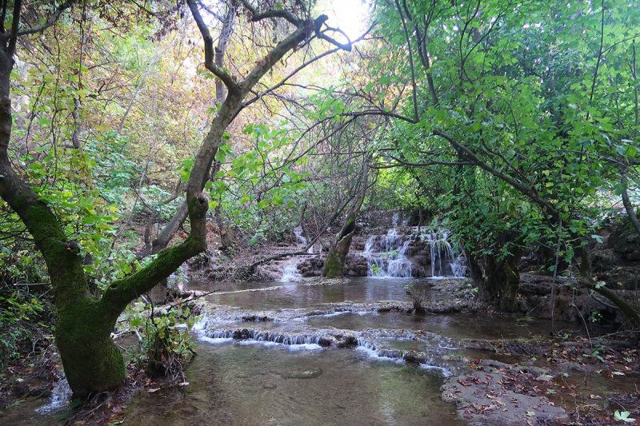
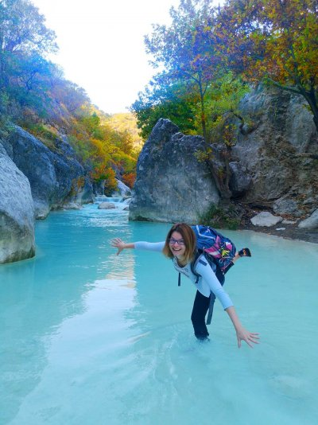
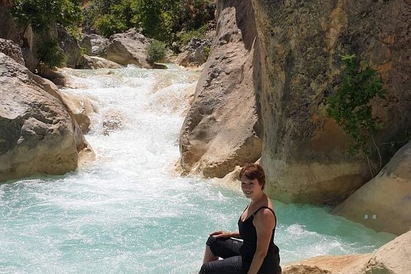

1_ Religious Tourism
The cities of Karbala and Najaf are the most popular tourist destinations in Iraq due to the location of religious sites in the country:
Karbala
The city, best known as the location of the Battle of Karbala in 680 CE, or the shrines of Imam Husayn and Abbas, is considered a holy city for Muslims, in the same way as Mecca, Medina and Jerusalem. The events of Karbala reflect the collision of the good versus the evil, the virtuous versus the wicked, and the collision of Imam Husayn (grandson of Prophet Muhammad-the head of virtue) versus Yazid (the head of impiety). Al-Husayn was a revolutionary person, a righteous man, the religious authority, the Imam of Muslims. The largest contemporary (millions of visitors) Muslim pilgrimage isn't the hajj to Mecca, it's the Shiite pilgrimage to Karbala in Iraq
Al-Najaf
Al-Najaf is considered sacred by Shi'a Muslims. Al-Najaf is renowned as the site of the burial place of Muhammad's son in law and cousin, Imam Alī ibn Abī Tālib. The city is now a center of pilgrimage throughout the Shi'ite Islamic world. It is estimated that only Mecca and Medina receive more Muslim pilgrims. As the burial site of Shi'i Islam's second most important figure, the Imam Ali Mosque is considered by Shiites as the third holiest Islamic site.
2_ Tourism in Kurdistan
Erbil (Hawler)
The Arab Council of Tourism named Erbil the 2014 Arab Tourism Capital. As a result, in the coming year the capital city of Kurdistan will stage 40 different cultural events, including festive celebrations for Newroz (the Kurdish New Year), an international marathon, and multiple international film festivals.
Lalish

Lalish, one of the most unique Iraqi Kurdistan destinations. It's the holiest place for the followers of Yazidi faith and it’s about 4000 years old. Yazidis are expected to make a six-day pilgrimage to Lalish at least once in their lifetime. It’s surrounded by three picture-perfect mountains, the Hizrat, Misat and Arafat. Lalish is so sacred that you have to remove your shoes before entering the village. Traditionally, Yazidis walk there barefoot. But you can wear socks if your feet feel cold.
Alqosh
Alqosh is a small village inhabited by ethnic Assyrians, Syriac Christians. One probably going to surprise that in Iraq there are a lot of churches and some of the most intriguing and beautiful travel destinations are Christian monasteries. The Rabban Hormizd Monastery is also carved into and out of the rocks of a mountain. It belongs to the Chaldean Catholic Church which is an Eastern Catholic Church. It was founded around 640 AD by Rabban Hormizd. Hormizd means monk in the ancient Syriac language. It’s situated two miles from the Christian village Alqosh and 28 miles from Mosul
Duhok- Halgurd Mountain
According to Wikipedia, the highest point of Iraq is Cheekha Dar with an elevation of 3,611 and it’s located in Iraqi Kurdistan very close to the Iranian border. Cheekha Dar is actually at the border of Iran and Iraq. Therefore, they consider Halgurd as the highest mountain in Iraq with an altitude of 3,607 meters. It’s located in Erbil Province of Iraqi Kurdistan a few kilometers away from the Iranian border
Duhok- Zoragvan, Barzan
Getting to Zoragvan and Barzan is one of most beautiful adventures when traveling in Iraqi Kurdistan-Duhok province
Deraluk- Duhok
The blue color of the water is incredibly beautiful by Deraluk of Duhok
The Waterfalls in Kurdistan-Iraq

Gali Ali Beg, a famous waterfall in Northern Iraq / in Iraqi Kurdistan. Situated in the bottom of the Gali Ali Beg canyon, temperatures here are up to 20 degrees cooler in the Summertime. This makes the Gali Ali Beg waterfall a popular tourist destination
Bekhal Waterfall is located in the mountainous northern part of the country in the Kurdistan Region, in Erbil Governorate. It is located 10 km west of Rawandiz and 135 km from Erbil. This waterfall hosts many visitors and tourists across the country.
3_ Tourism in Marshes of Iraq
In southern of Iraq, much of the area around Uruk and Ur is marshland and it has been suggested that this region could one day become a popular spot for wildlife holidays and eco-tourism.
The marshlands between the Euphrates and Tigris rivers are frequently described as the Garden of Eden or the Cradle of Civilization.
After the Iraq war of 1991, in an act of environmental vandalism Saddam Hussein drained the marshes and persecuted their inhabitants as punishment for an uprising against his rule. Yet one former occupant of the marshes believes the area has enormous tourism potential.
In winter the marshes now cover 76 per cent of their previous range and wildlife is returning, with water buffalo abundant, marbled teal numbering about 43,000, along with pygmy cormorants and the African darter. Another notable animal is a local species of otter, first identified by Gavin Maxwell, the author, when he toured the marshes with Wilfred Thesiger, the explorer, in 1956, and which features in his novel Ring of Bright Water.